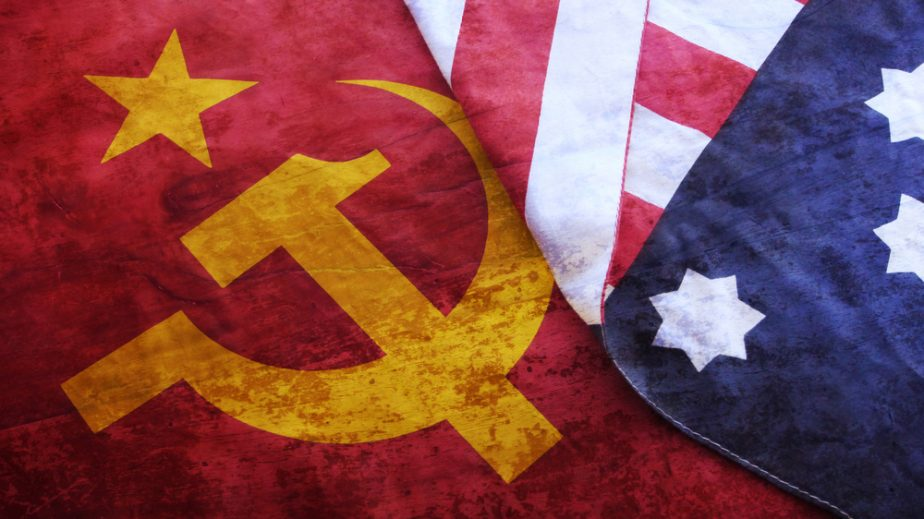
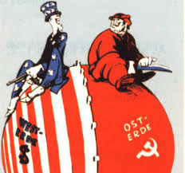
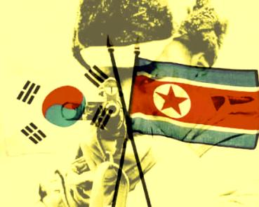
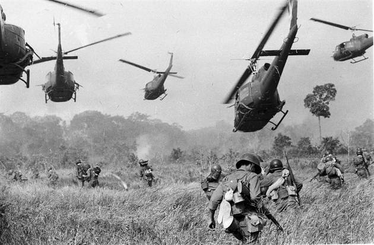
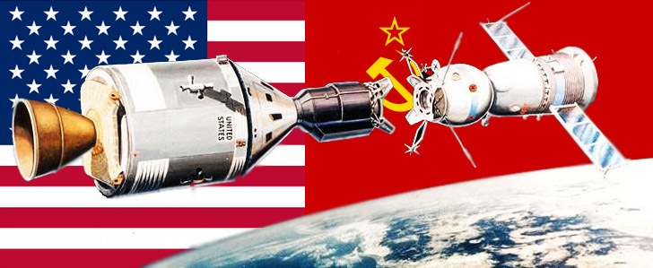
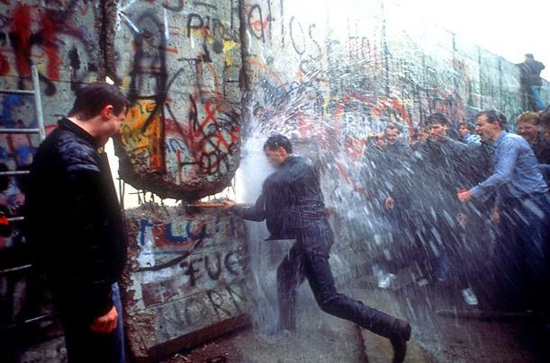

Eventos históricos que mudaram o mundo
Para voltar à página inicial, clique no botão abaixo.
Página inicialGuerra Fria

Guerra Fria é a designação atribuída ao período histórico de disputas estratégicas e conflitos indiretos entre os Estados Unidos e a União Soviética, compreendendo o período entre o final da Segunda Guerra Mundial (1945) e a extinção da União Soviética (1991), um conflito de ordem política, militar, tecnológica, econômica, social e ideológica entre as duas nações e suas zonas de influência. É chamada "fria" porque não houve uma guerra direta entre as duas superpotências, dada a inviabilidade da vitória em uma batalha nuclear.
Causas:
A União Soviética buscava implantar o socialismo em outros países para que pudessem expandir a igualdade social, baseado na economia planificada, partido único (Partido Comunista), igualdade social e falta de democracia. Enquanto os Estados Unidos, a outra potência mundial, defendia a expansão do sistema capitalista, baseado na economia de mercado, sistema democrático e propriedade privada.Com o fim da Segunda Guerra Mundial, o contraste entre o capitalismo e socialismo era predominante entre a política, ideologia e sistemas militares. Apesar da rivalidade e tentativa de influenciar outros países, os Estados Unidos não conflitou a União Soviética (e vice-versa) com armamentos, pois os dois países tinham em posse grande quantidade de armamento nuclear, e um conflito armado direto significaria o fim dos dois países e, possivelmente, da vida em nosso planeta.

O muro de Berlim:
O Muro de Berlim foi construído em 13 de agosto de 1961 e só seria derrubado 28 anos depois, em 9 de novembro de 1989. O muro dividiu a cidade de Berlim em duas, a fim de evitar a emigração da população de Berlim Oriental para o lado Ocidental.
Só podemos compreender a existência do Muro de Berlim dentro do contexto da Guerra Fria. Esta foi uma disputa geopolítica iniciada ao fim da Segunda Guerra Mundial (1939-1945) entre Estados Unidos da América (liderando o bloco capitalista) e a União das Repúblicas Socialistas Soviéticas (à frente do bloco socialista).
Com o fim da Segunda Guerra Mundial, os principais vencedores – Inglaterra, Estados Unidos, França e União Soviética – ocuparam a Alemanha derrotada. Se a Alemanha sofreu como um todo com esta divisão, para a cidade Berlim foi pior. A antiga capital estava em pleno território ocupado pelos soviéticos e foi cortada – literalmente – em dois. As fugas da porção oriental para a ocidental eram corriqueiras antes de 1960. Cerca de 2 mil pessoas evadiam-na diariamente, tendo em vista as melhores condições de vida no lado capitalista.
A Guerra da Coréia:
A guerra da Coreia foi um conflito militar que ocorreu entre os anos de 1950 a 1953. Tendo de um lado a Coreia do Norte apoiada pela China, e do outro, a Coreia do Sul, com apoio dos Estados Unidos e as forças das Nações Unidas.Até 1945 a Coreia era um território de domínio japonês, quando o Japão foi derrotado na Segunda Guerra Mundial e assinou a sua rendição, os EUA e a URSS naquele momento as principais nações mundiais, concederam então autonomia e soberania aos coreanos e a Coreia.
A Coreia é separada pelo paralelo 38°, como ficou estabelecido na Conferência de Potsdam. Esta demarcação divide a Coreia em dois sistemas políticos opostos: Coreia do Sul (República da Coreia), capitalista por influência dos EUA, e Coreia do Norte (República Popular Democrática da Coreia), comunista, apoiada pela União Soviética. Os dois governos reivindicam o poder sobre a totalidade do território coreano, o que torna a área de fronteira uma região de crise e incidentes.

A Guerra do Vietnã:
A Guerra do Vietnã, considerada como a mais longa e sangrenta desde o final da Segunda Guerra Mundial. O enfrentamento militar entre capitalistas e socialistas envolveu os Vietnãs do Norte e do Sul, além de boa parte do Sudeste Asiático.
Porém, a participação mais efetiva foi de vietnamitas e Estados Unidos que enviaram suas tropas à região em 1964. Após duas décadas de conflitos (1955-1975), o saldo assustador de mortos e feridos, mostra o verdadeiro massacre compreendido pela Guerra do Vietnã que, também, deixou consideráveis danos econômicos às nações envolvidas.

Corrida Espacial:
No fim dos anos 1950, a competição entre EUA e URSS extrapolou os limites do próprio planeta Terra e também o espaço virou cenário das disputas entre os dois blocos. Foi a chamada Corrida Espacial, que teve início em 4 de outubro de 1957, quando os soviéticos lançaram o primeiro satélite artificial do planeta, o Sputnik.O lançamento do Sputnik foi também a primeira vez em que um objeto criado por humanos foi colocado em órbita. O satélite funcionou por 22 dias antes de suas baterias acabarem e sua finalidade era pouco relevante, visto que era a de transmitir um sinal de rádio amador que poderia ser ouvido como um “bip” em qualquer parte do mundo. Ainda assim, foi o suficiente para preocupar os Estados Unidos, que não queriam ficar atrás dos soviéticos e em 31 de janeiro do ano seguinte, lançaram seu próprio satélite, o Explorer I. Alguns meses depois, em julho, o então presidente Dwight Eisenhower determinou a criação da NASA (National Aeronautics and Space Administration), a agência federal dedicada à exploração espacial.
Os soviéticos saíram mais uma vez à frente em 1959, quando lançaram a Luna 2, primeira sonda espacial a atingir a Lua. Em abril de 1961, o soviético Yuri Gagarin foi o primeiro homem a orbitar a Terra, na nave espacial Vostok 1. Os engenheiros da NASA dedicaram-se ao desenvolvimento de uma nave menor que a soviética e testaram-na com chimpanzés. Em 5 de maio, Alan Shepard foi o primeiro estadunidense a alcançar o espaço. As populações soviética e estadunidense ficaram intensamente envolvidas com a Corrida Espacial e astronautas e cosmonautas (termo utilizado para fazer referência aos astronautas soviéticos) eram vistos como grandes heróis nacionais.
O presidente John F. Kennedy anunciou, em 1961, que os Estados Unidos levariam o homem à Lua antes do fim da década e a NASA lançou o Projeto Apollo com esse objetivo. Ao longo da década, um conjunto de expedições foi realizado e em 16 de julho de 1969, a nave espacial Apollo 11 foi lançada, atingindo solo lunar quatro dias depois. Às 17h17 (horário de Brasília) do dia 20 de julho de 1969, chegava à base da NASA a notícia de que Neil Armstrong e Edwin Aldrin haviam pisado na Lua. É de Armstrong a famosa frase “um pequeno passo para um homem, um grande passo para a humanidade”. Com a chegada à Lua, os Estados Unidos ganhavam a Corrida Espacial.

O fim da Guerra Fria:
A Guerra Fria começou a esfriar durante a década de 1980. Em 1989, a queda do muro de Berlim foi o ato simbólico que decretou o encerramento de décadas de disputas econômicas, ideológicas e militares entre o bloco capitalista, comandado por Estados Unidos e o socialista, dirigido pela União das Repúblicas Socialistas Soviéticas (URSS). Na sequência deste fato, ocorreu a reunificação da Alemanha (Ocidental com Oriental).
Podemos afirmar que a crise nos países socialistas funcionou como um catalisador do fim da Guerra Fria. Os países do bloco socialistas, incluindo a União Soviética, passavam por uma grave crise econômica na década de 1980. A falta de concorrência, os baixos salários e a falta de produtos causaram uma grave crise econômica. A falta de democracia também gerava uma grande insatisfação popular.
Portanto, a década de 1990 marcou o fim da Guerra Fria e também da divisão do mundo em dois blocos ideológicos. O temor de uma guerra nuclear e as disputas armamentistas e ideológicas também foram sepultadas.
